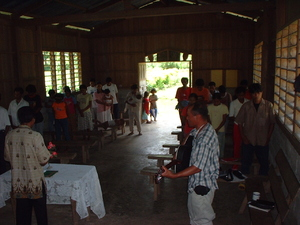
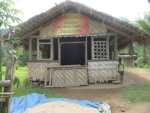

simba  
/simba/
v_rt.
“worship”
v.
for someone (egsimba, agent, eg><ø-) to worship someone or something (egsimbeen, egsimbe:n, theme, eg><en-)
Diyè key egsimba te Pamulaan te egginguma ne Duminggu.
We will going to worship at Pamulaan church this coming sunday.
Eng. worship
Tag. sumambá
Ilo.: agdáyaw; agraém
OCM: Religious Experience (781)
Online dict status: -
Usage level: F
n.
(simbaan, -an) a church
Due peyina ney diyè te simbaan kaaselem te Sebadu.
Eng. church
Tag. simbáhan; kapílya
Ilo.: simbáan; kápilya
OCM: Religious and Educational Structures (346)
Online dict status: -
Usage level: M
v.
for someone (egsimba-simba, agent, eg><ø-rdpRT-) to worship regularly
Egsimba-simba ka me etew te aldew iya te Duminggu.
People really pretend to worship during sunday.
Online dict status: -
Usage level: R
Updated by: RJH,TME,AAA,RJH
Last updated: 13/Oct/2009
"insimba" in text "A day's activities"
"Egsimbeen" in song "Mateles ne marusilem"
"egsimbeen" in song "Manama ne matulus"
"simbeen" in song "Manama te langun"
This page last updated: 03-Jan-2020
Copyright © 2009-2014, Matigsalug Language Christian Association, Inc